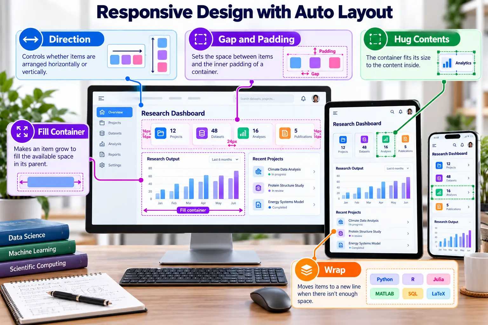
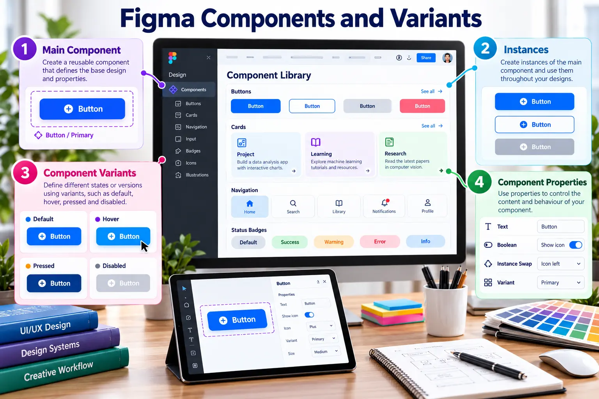

Build adaptable components instead of isolated screens
Responsive behaviour and reusable components reduce repetition and make design decisions consistent.

Auto Layout essentials
DirectionArrange children horizontally or vertically.
Gap and paddingMaintain systematic spacing inside a component.
Hug contentsSize an object according to its content.
Fill containerUse the available space in the parent layout.
Fixed sizePreserve a deliberate dimension where required.
WrapMove items to another row when space becomes limited.

Component architecture
| Concept | Purpose |
|---|---|
| Main component | The reusable source of truth. |
| Instance | A linked copy used in a design. |
| Variant | A structured state or option such as default, warning or error. |
| Properties | Controlled text, visibility, instance swaps and variant choices. |
| Design system | Components, variables, guidance and shared visual rules. |
Required component set
- Navigation item
- Statistic card
- Pipeline status badge
- Primary and secondary buttons
- Alert message with success, warning and error variants